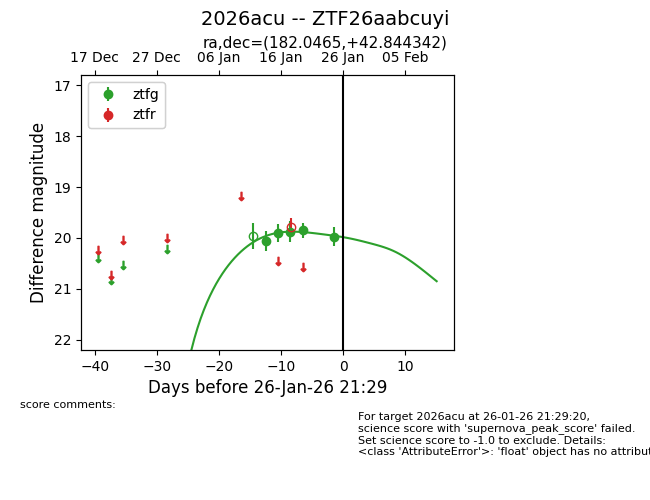
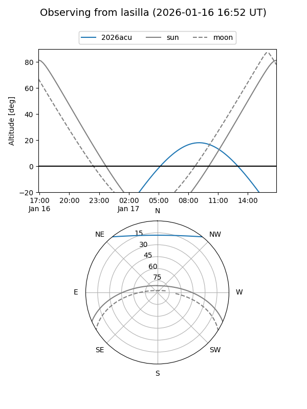
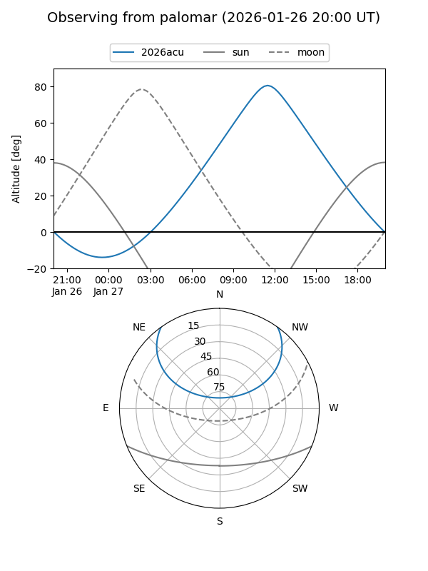

2026acu
Target 2026acu at 2026-01-16 12:30
Aliases and brokers:
FINK: link
Lasair: link
ALeRCE: link
TNS: link
YSE: link
alt names
ZTF26aabcuyi (ztf,fink_ztf)
2026acu (tns,yse)
Coordinates:
equatorial (ra, dec) = 182.0465,+42.84434
equatorial (HMS+DMS) = 12:08:11.16,+42:50:39.63
galactic (l, b) = (149.3558,+71.99503)
Flags:
Photometry:
last ztfg=19.90
2 ztfg detections
Lightcurve

Visibility


Additional plots